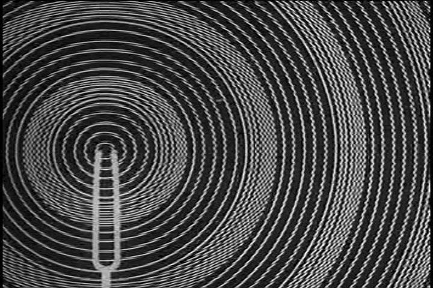
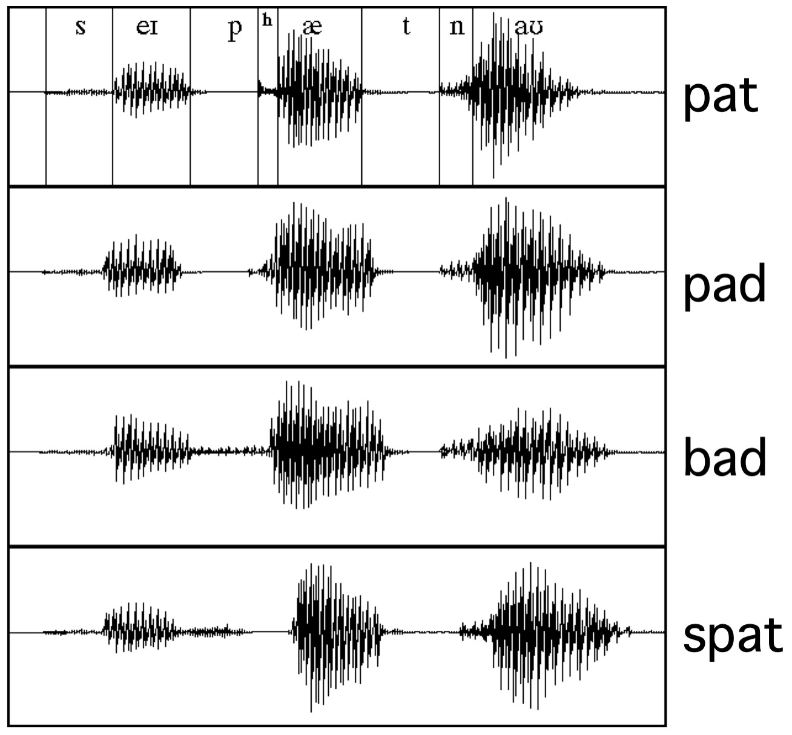
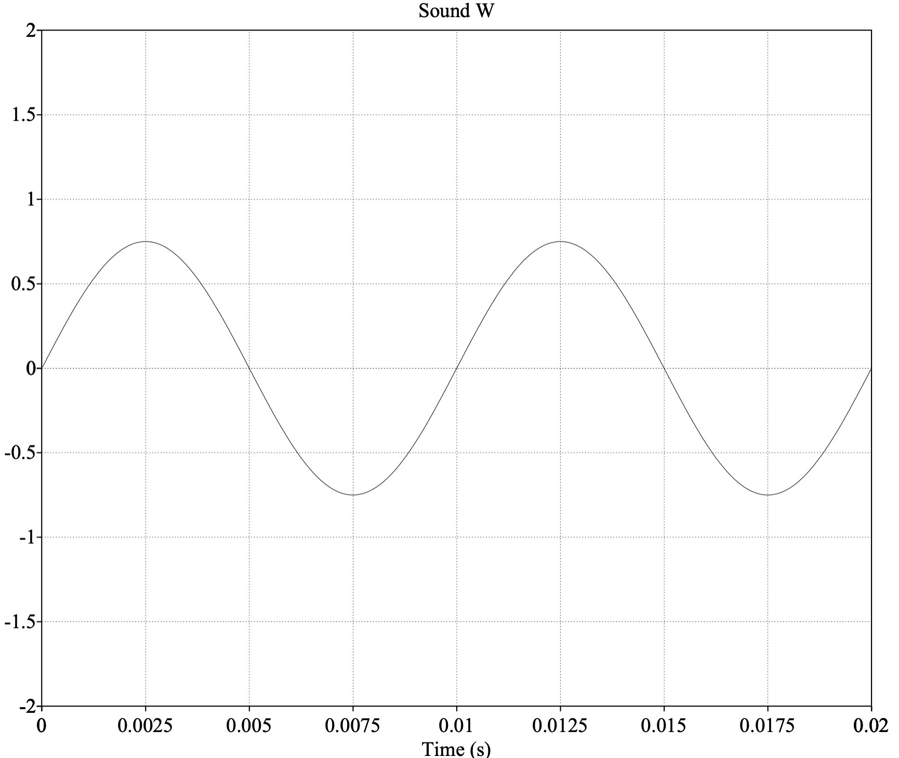
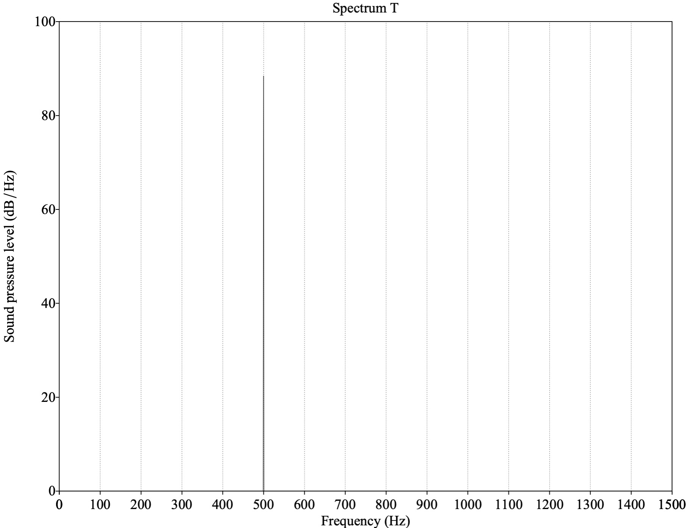

It’s all sound
We’re using speech gestures to produce an acoustic signal
Gestures without sound are unhelpful
Communication works fine on the phone
What is sound?
What are the important properties of sound?
How can we visualize them?
The study of waves





How do speakers work?
Why does clapping cause a sound, but waving your hand through the air doesn’t?
Why are gunshots loud?
Waveforms
Spectra
Spectrograms
A horizontal cut through the wave showing the peaks and troughs over time

The speed with which a wave oscillates



Different phenomena produce sounds at different frequencies
Most things produce sounds with a mix of different frequencies, each at different amplitudes
Speech has many components at different frequencies
Changing the “fundamental frequency” (f0) of your voice changes the perceived “pitch” of your voice
Higher frequency of laryngeal vibration == “higher pitch”
Intonation is all about this fundamental frequency!
Using a Mathematical Process called a Fourier Transform which breaks a signal down into its component frequencies at a certain time

This is much better information for analyzing speech
So, we’re going to use them all the time here




Displays a series of FFTs, with peaks arrayed vertically, to show changes in frequency over time


SpectrumView on iOS
https://musiclab.chromeexperiments.com/Spectrogram/
Praat (which you should already have installed)
https://www.youtube.com/watch?v=as2QpSuGCc0
Play with some sound visualization tools
Get ready to visualize speech!